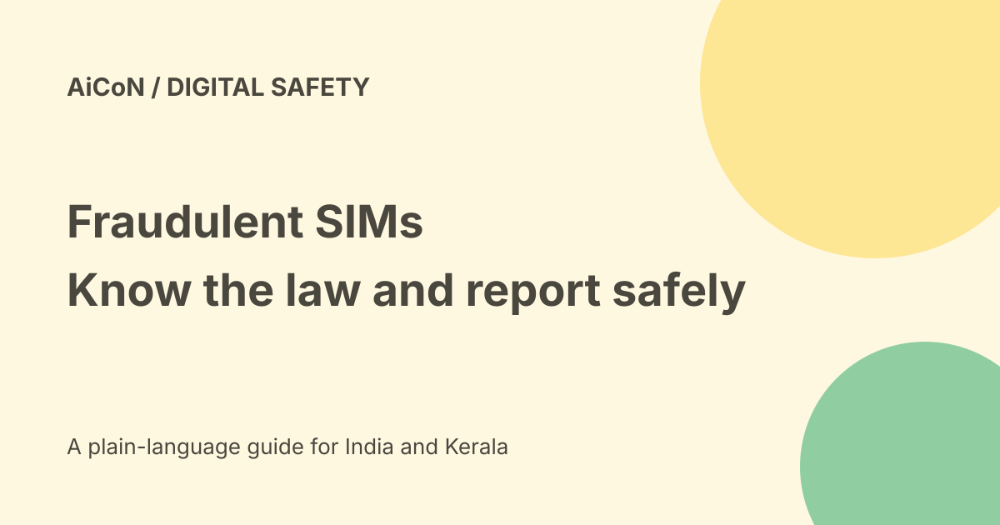

Fraudulent SIMs: what Section 42 says and how to check your number
Obtaining a SIM through fraud, cheating or personation is an offence under Section 42(3)(e) of the Telecommunications Act, 2023. The law allows up to three years in prison, a fine up to ₹50 lakh, or both. These are maximum penalties, not an automatic sentence for every disputed connection.

What conduct does the section cover?
The exact clause covers obtaining subscriber identity modules, or other telecommunication identifiers, through fraud, cheating or personation. A subscriber identity module is the SIM used for a mobile connection.
Personation means posing as someone else. The section is about the way the connection or identifier was obtained. It should not be simplified into a claim that every unknown number in a person's name proves that person committed a crime.
The maximum punishment
Section 42(3) provides imprisonment that may extend to three years, a fine that may extend to ₹50 lakh, or both. A court decision depends on the law and facts of the case. This guide is general public information, not advice on a particular investigation.
The same subsection also lists other telecom offences. Their presence does not mean every SIM error falls within all those clauses. Keep the precise clause and alleged conduct separate.
This is not a new October 2026 law
The Act was enacted in December 2023. A government release confirms that Sections 42 to 44 came into force on 26 June 2024, under the June notification.
A December 2025 government reply again states that obtaining SIMs through fraud, cheating or personation is an offence under 42(3)(e). A current social-media warning should not be mistaken for a law starting today.
Attempts and helping another person
Section 42(6) discusses abetment, attempt and conspiracy and includes the condition about the act being committed in consequence of the abetment or conspiracy. Read the actual text rather than treating a short warning as a complete legal rule.
If someone asks to borrow your identity documents to obtain a connection, do not hand them over casually. Do not sign an application that misstates the subscriber. For a specific legal problem, seek qualified legal help.
Check connections in your name
- Open the official Sanchar Saathi website by typing its address yourself.
- Choose Know Mobile Connections in Your Name.
- Use your mobile number and the portal's verification process to see listed connections.
- Review each number carefully. Do not report your own valid number by mistake.
- For a connection you did not acquire, use the appropriate This is not my number option.
- For an unwanted valid connection, use the different Not Required option.
- Keep the request reference and follow the official status process.
The portal says reported connections go through re-verification. Reporting is not a guaranteed immediate disconnection or a finding of criminal liability. The existing AiCoN Sanchar Saathi guide covers the wider portal and lost-phone service.
Protect documents and accounts
Use the operator's official store or authorised process. Read why a document is needed before sharing it. Avoid sending identity scans to an unknown chat contact who promises a cheap SIM or an urgent re-verification shortcut.
Do not tell a caller an OTP just because they claim to be from an operator or the government. Contact the operator through a known official route if a connection suddenly stops working or an account change looks wrong.
Reporting suspected fraud is different from lost money
Sanchar Saathi describes Chakshu for suspected fraudulent communications. Its FAQ says it does not handle cases where money has already been lost. For financial cybercrime, use 1930 and the official cybercrime portal promptly, as the government guidance directs.
Save relevant messages and transaction details. An instruction to pay a stranger to remove a SIM case is not proof of an official demand.
Free and India verdict
This is an Indian legal-information guide and an official connection-checking route, not a paid legal service. We did not log in, submit a report or test a particular subscriber's record. It does not determine whether any reader has committed an offence.
What changed since the original post?
The original maximum penalty is supported. We add the commencement date, distinguish suspicion from a finding of guilt, preserve the condition in Section 42(6), and explain safe reporting choices.
Frequently asked questions
Is ₹50 lakh automatic?
No. The wording is a maximum that may apply under the law.
Does an unknown listed SIM prove I am guilty?
No. Check and report through the proper process.
Did the rule start in October 2026?
No. The cited section took effect in June 2024.
Should I use Chakshu after losing money?
The FAQ directs financial cybercrime victims to 1930 and the cybercrime portal instead.
Sources: Official Act in the Gazette · IndiaCode Act record · Government commencement explanation · Government reply on fraudulent SIMs · Official SancharSaathi services and FAQ · Official connections portal. Checked 7 October 2026.